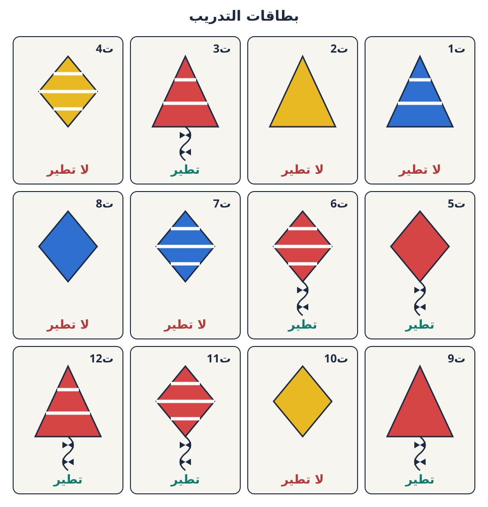

الجلسة 1: ما الإلمام بالذكاء الاصطناعي، ثم نشاطان تنفذهما كما ينفذهما طلابك: لعبة تصنيف دون حاسوب، ومصنِّف تدرّبه ثم تُفشله
الطالبة تكتب وصفًا في مولّد صور وتطبع أجمل صورة لملصقها.
ما تعلمته عن الذكاء الاصطناعي: لا شيء.
الطالبة تقارن عشرين صورة ولّدها الأمر نفسه، وتسأل: من يظهر فيها دائمًا، ومن يغيب؟
ما تعلمته: أن المخرجات تعكس بيانات، وأنها تُفحص.
من أمثلة يختارها الناس. يستخرج منها قاعدة، ولا «يفهم» كما نفهم.
يتعلم القاعدة الأسهل لا الصحيحة. ويجيب بثقة حتى حين يخطئ.
بأمثلة لم يرها، وبمصدر موثوق، وبإنسان يراجع قبل أن يعتمد.
أنشطة اليوم والجلسة القادمة تمرّ على الأسئلة الثلاثة في ثلاث فئات عمرية.
| إطار المعلمين | إطار الطلاب | |
|---|---|---|
| الحجم | 15 كفاءة | 12 كفاءة |
| الأبعاد | عقلية محورها الإنسان · أخلاقيات الذكاء الاصطناعي · أسسه وتطبيقاته · أصول التدريس به · التعلم المهني | عقلية محورها الإنسان · أخلاقيات الذكاء الاصطناعي · تقنياته وتطبيقاته · تصميم أنظمته |
| مستويات التقدم | الاكتساب · التعمق · الابتكار | الفهم · التطبيق · الابتكار |
مشارك ناقد ومسؤول في عالم فيه ذكاء اصطناعي.
يستخدمه شريكًا في الإبداع، والقرار له.
يقسم العمل بقصد بينه وبين الذكاء الاصطناعي.
يفهم كيف تعمل الأنظمة وكيف تُحسَّن.
التفاعل هو الأساس. الإبداع والإدارة يسيران معًا. والتشكيل يأتي آخرًا.
| المجال | مثال من كفاياته |
|---|---|
| D1 البيانات | D1.1 ملاحظة السمات وتصنيفها |
| D2 الأنظمة وتعلم الآلة | D2.3 تعلم الآلة وأداء النماذج |
| D3 التفاعل والتحقق | D3.2 التحقق من النتائج والمخرجات |
| D4 الحماية والخصوصية | D4.2 حماية البيانات الشخصية |
| D5 المسؤولية والأثر | D5.1 مسؤولية الإنسان والمراجعة |
| الفئة العمرية | الاستخدام المباشر للأدوات، كما يوجّه الإطار الوطني |
|---|---|
| من 6 إلى 8 | لا استخدام مستقل. المعلم يعرض، والطالب لا يشغّل. |
| من 9 إلى 11 | محدود، يتوسطه المعلم، في بيئة معتمدة، بمدخلات جاهزة. |
| من 12 إلى 14 | هادف وتحت الإشراف، بحدود واضحة للمهمة. |
| من 15 إلى 18 | استقلال متزايد ضمن الشروط المعتمدة. |
| الدرس | الفئة | الكفاية | AILit | الحكم |
|---|---|---|---|---|
| د1 · الصف الثاني: لعبة الطائرات الورقية دون حاسوب | من 6 إلى 8 | D1.1 وD2.1 | التفاعل | إلمام |
أربع معلمات في مجمّع مدارس السَّنا كتبن هدفًا عن الذكاء الاصطناعي في دروسهن. أي درس يعلّم الطالبات شيئًا عن الذكاء الاصطناعي نفسه؟
تربط أربعة دروس من مجمّع مدارس السَّنا ودرسًا من مادتك بكفاءات مسماة من الأطر، وتكتشف الدرس الذي يستخدم أداة ولا يعلّم شيئًا عن الذكاء الاصطناعي.
D1_1_competence_map.html
قاعدتان من صفة واحدة تصيبان في 12 من 12 في التدريب. في بطاقات الاختبار الست: واحدة تصيب في 6، والأخرى في 2 فقط.
D1.1: يصنّف بحسب سمة ويسمّيها.
D2.1: يقول إن أنظمة الذكاء الاصطناعي من صنع الناس وليست أشخاصًا، وإن ما تقترحه قد لا يكون صحيحًا.
لا استخدام مستقل لأداة عامة، ولا حسابات.
كل ما يُقيَّم من عمل الطفل يبقى في الفئة AI-0: بلا مساعدة من الذكاء الاصطناعي في جوهر المهمة.
يدير اللعبة بنص المعلّم. لا يشرح أكثر مما في النص.
يلعبون كأنهم في الصف الثاني: يقولون ما يرونه أولًا.
يكتب: أي كلمة احتاجت إلى شرح؟ متى ظهر الخطأ؟ من أجاب عن «لماذا»؟
ورقتا الملاحظات من هذا المختبر والذي بعده هما دليل ناتج التعلم الثاني. لا اسم فيهما.
مجموعة في الصف الثاني كتبت قاعدة تصيب في بطاقات التدريب الاثنتي عشرة كلها. ماذا تقول معلمتهن؟
تنفذون لعبة تصنيف دون حاسوب كما ينفذها طلاب الصفوف الأولية: قاعدة تُستخرج من بطاقات التدريب، ثم تُختبر ببطاقات جديدة فتنكشف القاعدة المضلِّلة. يدير كل مجموعة مشارك، ويكتب آخر ملاحظات المشاهدة.
D1_2_unplugged_sorting.html| لعبة الطائرات | مصنِّف اللافتات |
|---|---|
| بطاقات التدريب وعليها الجواب | صور التدريب في مجلدين: دائرة، ومثلث |
| المجموعة تستخرج قاعدة | البرنامج يستخرج قاعدة لا نراها |
| بطاقات الاختبار | صور اختبار لم يرها |
| «لماذا أخطأت؟» | ننظر في صور التدريب لا في البرنامج |
مصنِّف تدرّب على صور من مكان واحد أو فئة واحدة من الناس يتعلم ما يميّز المكان أو الفئة. وحين يُستخدم في غيرهما يخطئ، ولا يقول إنه يخطئ.
يبني مصنِّفًا بسيطًا من أمثلة يقدمها المعلم وبإجراء جاهز، في نشاط معتمد أو دون حاسوب، ويختبره بأمثلة مختلفة، ويصف حدًّا له.
استخدام محدود يتوسطه المعلم في بيئة معتمدة. المعلم يشغّل الأداة. صور أشياء لا أشخاص. لا حسابات للطلاب.
مصنِّف أصاب في كل صور الاختبار الأول، ثم أخطأ في أغلب صور اختبار ثانٍ فيه اللافتات نفسها على خلفيات أخرى. ما التفسير الأرجح؟
تدرّب مصنِّفًا على حزمة صور اللافتات، وتختبره بصور تغيّرت خلفيتها فتهبط دقته، ثم تصلحه بأمثلة تدريب أكثر تنوعًا. يدير النشاط مشارك لم يدر نشاط المختبر السابق، ويكتب آخر ملاحظات المشاهدة.
D1_3_train_break_classifier.htmlاحذف الأداة من الدرس: إن لم يبقَ شيء يُتعلَّم عن الذكاء الاصطناعي فليس درس إلمام.
اللون مع الذيل، والخلفية مع الشكل. قاعدة تطابق أمثلة التدريب ليست قاعدة صحيحة بعد.
نشاط دون حاسوب يحقق الكفاية. والأداة تحتاج إلى اعتماد وإلى فئة عمرية تسمح بها.